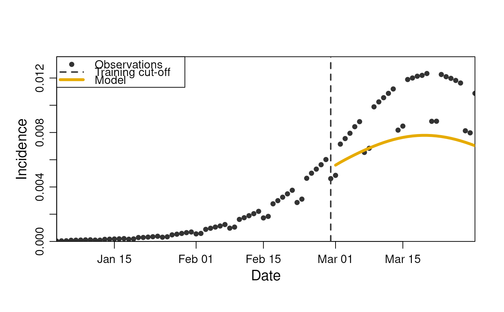

This class provides a diseasy model-template for a compartmental SEIR ordinary differential equation model.
The number of consecutive exposed, infectious, and recovered compartments can flexibly be specified to generate a
number of structurally different SEIR models.
Similarly, the number of age groups in the model can also be controlled to create structurally different models.
The model implements the following features:
A scaling of infection risk based on season (via
DiseasySeason)Contact matrices and activity scenarios (via
DiseasyActivity)Waning of immunity (via
DiseasyImmunity)Asymmetric cross-immunity interactions between variants (via
DiseasyVariant)
See vignette(diseasy-model-ode-seir) for a detailed examples of how to use this model.
Value
A new instance of the DiseasyModelOdeSeir R6 class.
Super classes
diseasy::DiseasyBaseModule -> diseasy::DiseasyModel -> diseasy::DiseasyModelOde -> DiseasyModelOdeSeir
Active bindings
malthusian_scaling_factor(
numeric(1))
A scaling factor to apply to the contact matrices to account for structural differences in the model. Read only.
Methods
Method new()
Creates a new instance of the DiseasyModelOdeSeir R6 class.
Usage
DiseasyModelOdeSeir$new(
observables = FALSE,
activity = TRUE,
season = TRUE,
variant = TRUE,
immunity = TRUE,
parameters = NULL,
...
)Arguments
observables, activity, season, variant, immunity(
booleanorR6::R6Class instance)
If a boolean is given, it dictates whether to load a new instance module of this class.
If an instance of the module is provided instead, a copy of this instance is added to theDiseasyModelinstance. This copy is a "clone" of the instance at the time it is added and any subsequent changes to the instance will not reflect in the copy that is added toDiseasyModel.parameters(
named list())
List of parameters to set for the model during initialization.Parameters controlling the structure of the model:
compartment_structure(named integer())
The structure of the compartments in the model. The names should beE,I, andRfor the exposed, infectious, and recovered compartments, respectively. The exposed compartments can optionally be omitted.age_cuts_lower(numeric())
Determines the age groups in the model.malthusian_matching(logical(1))
Should the model be scaled such the Malthusian growth rate matches the corresponding SIR model?
Parameters controlling the dynamics of the model:
overall_infection_risk(numeric(1))
A scalar that scales contact rates to infection rates.disease_progression_rates(named numeric())
The overall progression rates for the disease states. The reciprocal of each rate is the average time spent in the all of the corresponding compartments. The exposed compartments can optionally be omitted.
Parameters controlling initialisation routines
incidence_polynomial_order(integer(1))
The degree of the polynomial to fit to the incidence curves.incidence_polynomial_training_length(integer(1))
The number of days to include in the incidence polynomial fit.incidence_max_order_derivatives(integer(1))
The highest (informed) derivative from incidence data. Higher order derivatives are set to zero.
Parameters controlling the functional modules:
activity.weights(numeric(4))
Passed to?DiseasyActivity$get_scenario_contacts(..., weights = activity.weights)immunity.approximate_compartmental_args(named list())
Arguments passed to$approximate_compartmental()
Additional parameters are:
training_length(named numeric(3))
The number of days that should be included in the training splits of the data for the model. Allowed splits are: "training", "testing", and "validation".incidence_feature_name(character(1))
The name of the observable that contains the incidence data to initialise from. *model_rate_to_observable(named list(named list(function(2))))
A named list of functions that maps the model rates to the observable in question (name). Each observable needs amapandreducefunction contained in a list (the first nested list). Themapfunction is applied in adplyr::group_map()call and should take two arguments: - The first argument contains the modelrateand information about group size:proportionandpopulation. - The second argument contains the groups (stratification). Thereducefunction is applied in adplyr::summarise()call to summarise across stratification levels. By default, thesumfunction is used and will work for all counting observables.
...Parameters sent to
DiseasyModelR6 constructor.
Method get_results()
The primary method used to request model results of a given observable at a given stratification
Usage
DiseasyModelOdeSeir$get_results(
observable,
prediction_length,
quantiles = NULL,
stratification = NULL
)Arguments
observable(
character)
The observable to provide data or prediction for.prediction_length(
numeric)
The number of days to predict. The prediction start is defined bylast_queryable_dateof the?DiseasyObservablesR6 class.quantiles(
list(numeric))
If given, results are returned at the quantiles given.stratification(
list(quosures) orNULL)
Userlang::quos(...)to specify stratification. If given, expressions in stratification evaluated to give the stratification level.
Returns
A tibble tibble::tibble with predictions at the level specified by stratification level. In addition to stratification columns, the output has the columns:
- date (Date) specifying the date of the prediction.
- realisation_id (character) giving a unique id for each realization in the ensemble.
- weight (numeric) giving the weight of the realization in the ensemble.
Method set_forcing_functions()
Set the forcing functions for the model.
Usage
DiseasyModelOdeSeir$set_forcing_functions(
infected_forcing = NULL,
state_vector_forcing = NULL
)Method malthusian_growth_rate()
This function computes the Malthusian growth rate for the given model configuration.
Details
This section follows the method outlined in doi: 10.1098/rsif.2009.0386 To compute the scaling, we need to compute the Jacobian matrix of the linearised system. Here, we linearise around S = 1. In this limit, there is no interaction with variants (since everyone is susceptible). The Malthusian growth rate is therefore not dependent on factors such as cross-immunity.
Method initialise_state_vector()
Infer the state_vector from incidence data
Usage
DiseasyModelOdeSeir$initialise_state_vector(
incidence_data,
overall_infection_risk = self %.% parameters %.% overall_infection_risk,
ei_rs_balance = 1,
method = c("derivative", "eigen-value")
)Arguments
incidence_dataincidence_data (
data.frame)
Incidence observations as adata.framewith columns -date: The date of the observations -age_group: The age group of the incidence observation (followingdiseasystore::age_labels()format) -variant: The variant of the incidence observation. -incidence: The incidence in the age group at the given dateoverall_infection_risk(
numeric)
The overall multiplier for the infection risk for the model.ei_rs_balance(
numeric(1))
Which estimate should be priorities when normalising? See details.method(
character(1))
The method to use for initialising the state vector.derivative: Directly infers the EI compartments from derivatives of the incidence signal.eigen-value: Uses the eigenvalues of the generator matrix to infer the state vector.
See the article
SEIR-initialisationin the online documentation for more information.
Details
The inference of the state_vector from incidence data is two-fold: EI states are inferred with one method and
the RS states are inferred with another. The methods are described in detail in the initialisation article
vignette("SEIR-initialisation").
When these estimates are combined, there is a degree of freedom in how to weight the estimates when
normalising the state vector. This is controlled by the ei_rs_balance parameter.
If ei_rs_balance = 1, the estimate for EI states are prioritised, and only the RS states are modified.
If ei_rs_balance = 0, the estimate for RS states are prioritised.
Returns
(numeric())
The initial state vector for the model (invisibly).
Method rhs()
The vectorised right hand side (RHS) function of the system of differential equations
Usage
DiseasyModelOdeSeir$rhs(
t,
state_vector,
parms = NULL,
overall_infection_risk = self %.% parameters %.% overall_infection_risk
)Arguments
t(
numeric(1))
The time to solve for.state_vector(
numeric())
The state vector to compute the RHS from.parms(
list)
Argument to comply withdeSolve::odeformat. Not used.overall_infection_risk(
numeric)
The overall multiplier for the infection risk for the model.
Returns
(numeric())
The rate of change for the differential equations.
Examples
# The model can be instantiated almost without arguments, but
# to illustrate its use, we configure a simple model:
# First, we add a observables modules with example data bundled
# with the package.
obs <- DiseasyObservables$new(
diseasystore = DiseasystoreSeirExample,
conn = DBI::dbConnect(duckdb::duckdb())
)
# The observables module also defines the time if interest via
# the `last_queryable_date` field. Data before this date are
# used to train the models, and predictions start on this date.
obs$set_last_queryable_date(as.Date("2020-02-29"))
# Define the incidence data to initialise the model
obs$define_synthetic_observable(
name = "incidence",
mapping = \(n_positive, n_population) n_positive / (n_population * 0.65)
)
# The example data uses a simple activity scenario for Denmark,
# which we replicate here
act <- DiseasyActivity$new(contact_basis = contact_basis$DK)
act$set_activity_units(dk_activity_units)
act$change_activity(date = as.Date("2020-01-01"), opening = "baseline")
# We create a simple model instance
m <- DiseasyModelOdeSeir$new(
observables = obs,
activity = act,
parameters = list(
"age_cuts_lower" = c(0, 30, 60),
"overall_infection_risk" = 0.025,
"disease_progression_rates" = c("E" = 1 / 2, "I" = 1 / 4)
)
)
# Run the model to predict incidence
prediction <- m$get_results("incidence", prediction_length = 30)
print(head(prediction, 5))
#> # A tibble: 5 × 4
#> date incidence realisation_id weight
#> <date> <dbl> <dbl> <dbl>
#> 1 2020-03-01 0.00530 1 1
#> 2 2020-03-02 0.00549 1 1
#> 3 2020-03-03 0.00568 1 1
#> 4 2020-03-04 0.00586 1 1
#> 5 2020-03-05 0.00603 1 1
# Plot the results
plot(m, observable = "incidence", prediction_length = 30)

rm(m, act, obs)